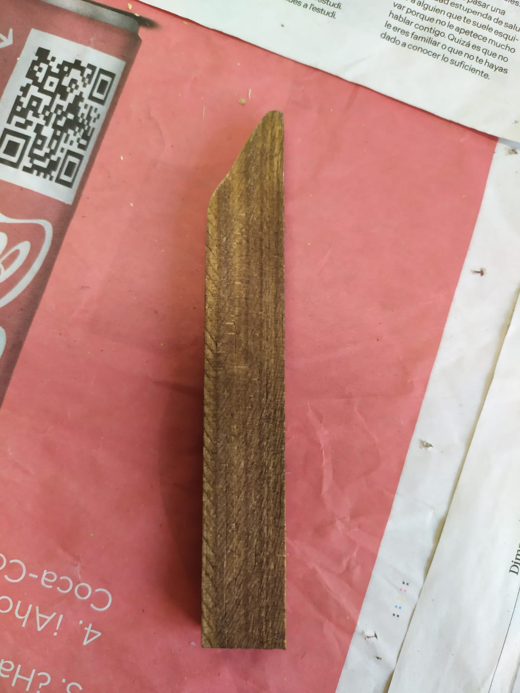
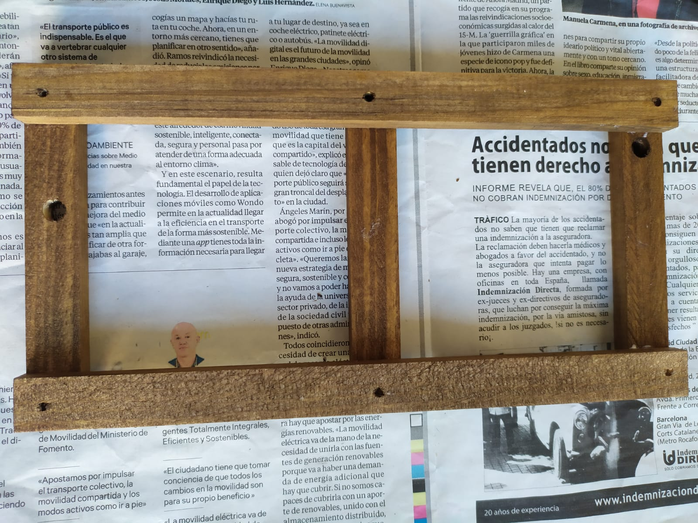
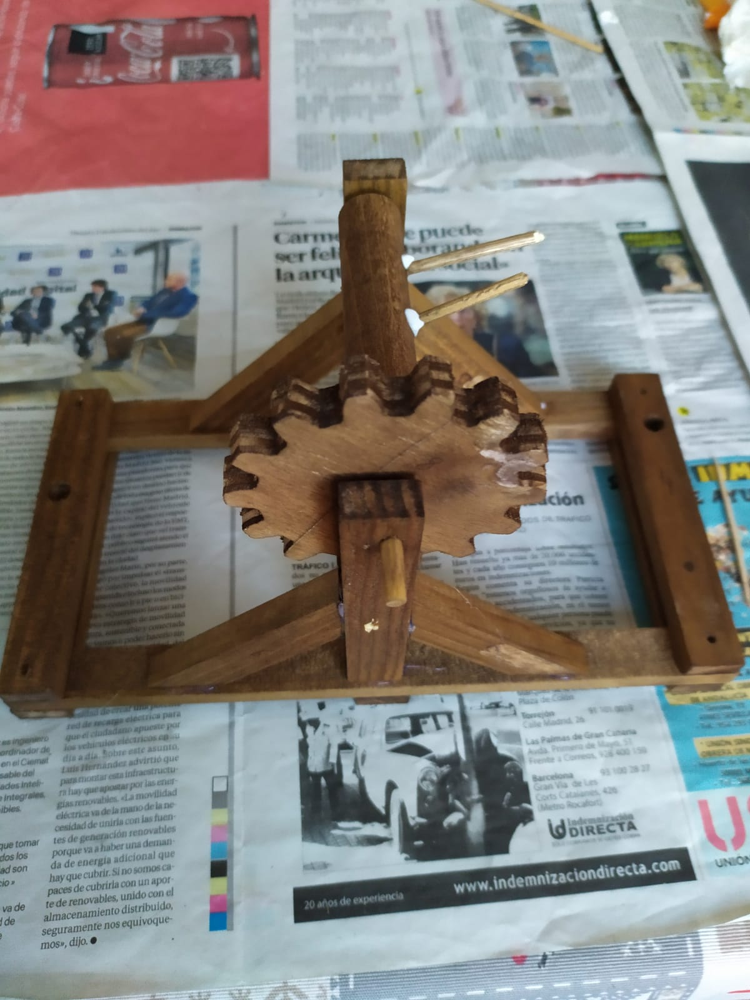
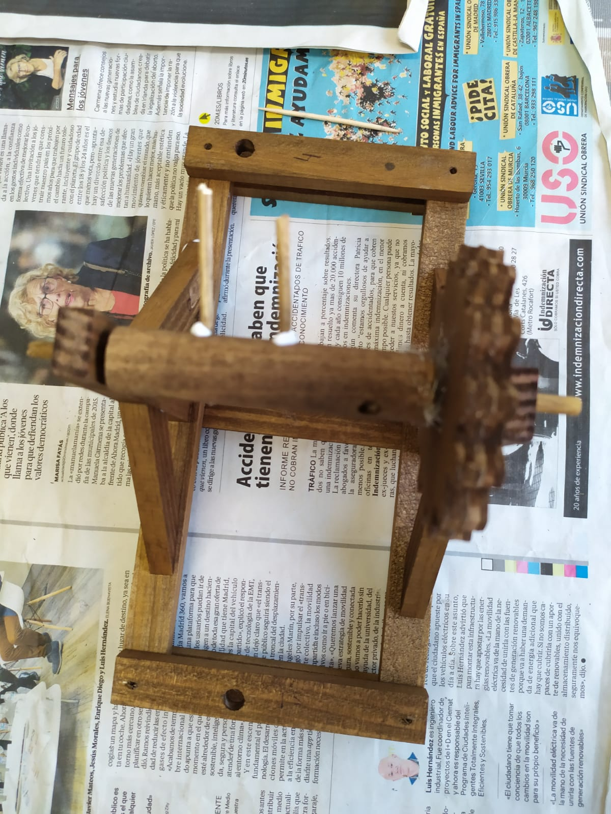
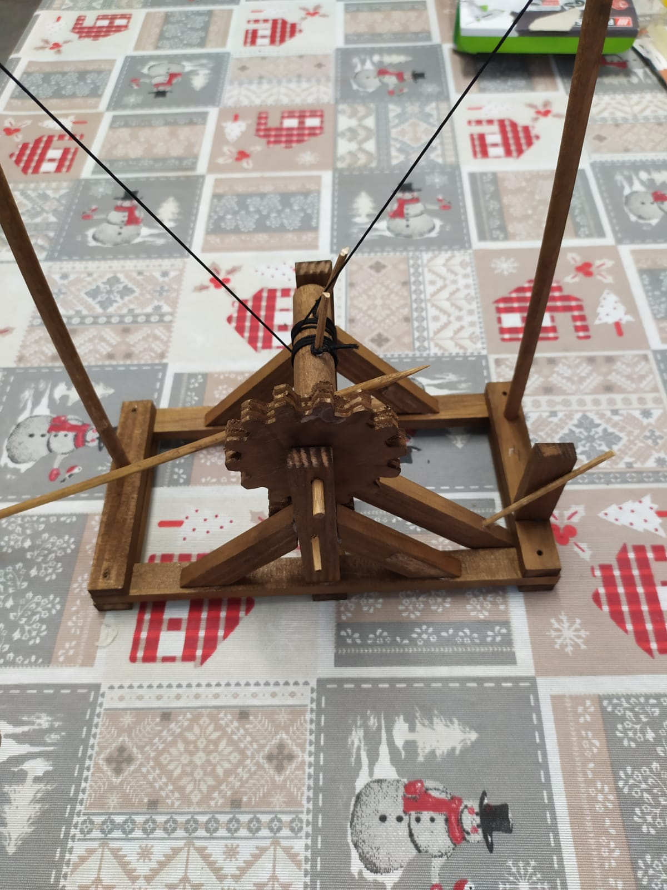
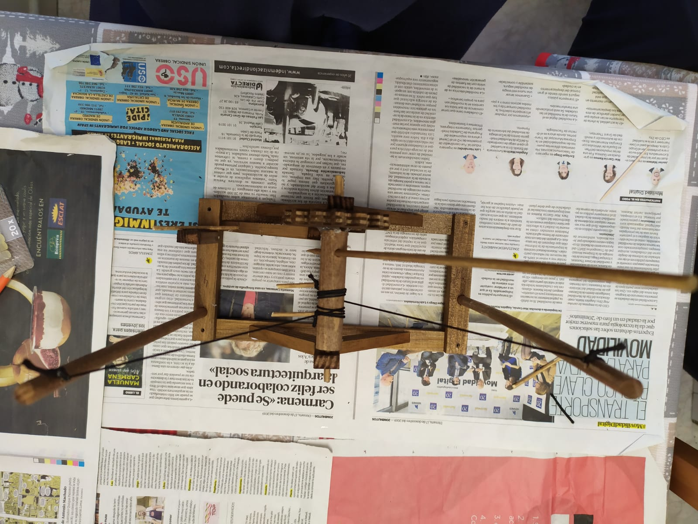
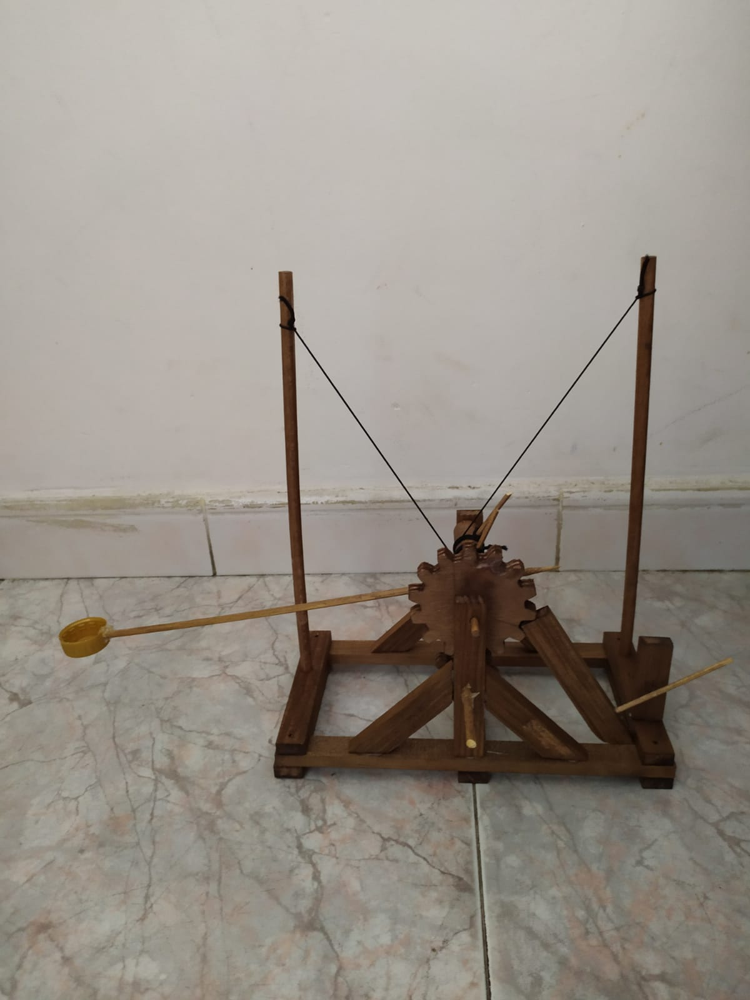
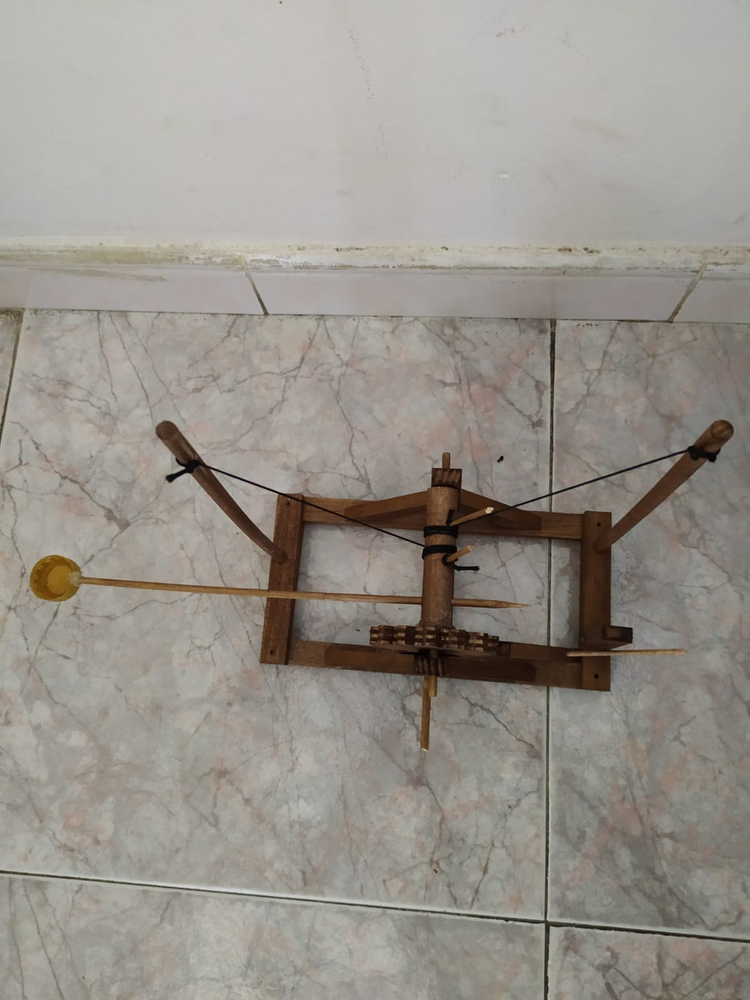

|  | Paso 1 Al principio de todo hemos cortado el trozo de madera,desde una esquina y con un angulo de 45º. |
|
| Paso 2 Seguidamente, hemos montado la base. Dos palos paralelos colocados encima de tres mas pequeños. |
 | |
|  | Paso 3 Seguidamente hemos puesto un palo de forma vertical en el medio del primer palo largo. Soportado por dos palos inclinados.Seguidamente, hemos hecho lo mismo en el otro lado. |
 |
|  |  | Paso 4 Hemos puesto un palo entre los dos palos verticales, y tambien hemos puesto el engranaje. Despues pusimos dos palos largos en los extremos de la catapulta. Les pusimos las cuerdas tensoras, que tambien las atamos al palo horizontal. |
| Paso 5 Lo unico que nos faltaba era poner el engranaje pequeño, debajo del grande. Un pequeño palo en el extremo de la cataputla, que sujetase un palito, que sujeta otro grande, para que no se mueva el engranaje. |
 |  |